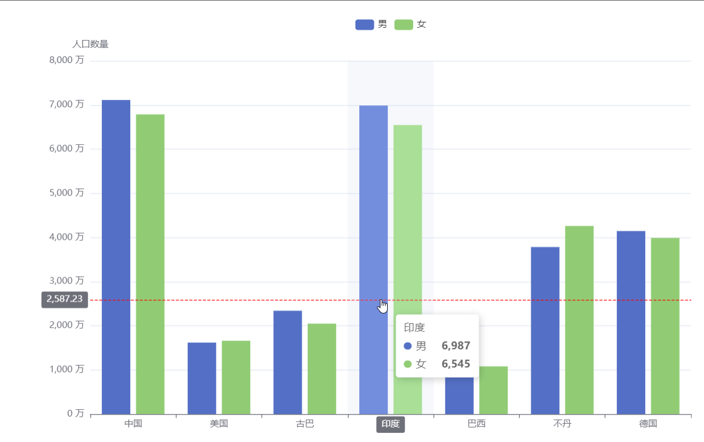
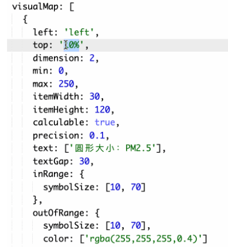
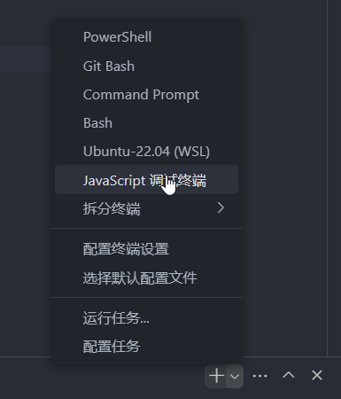
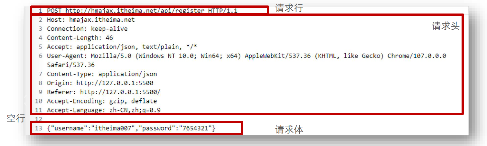

杂项
Echarts¶
样例¶
<!DOCTYPE html>
<html lang="en">
<head>
<script src="echarts.js"></script>
<style>
*{
margin: 0;
padding: 0;
}
#main{
margin: 20px;
background-color: rgb(228, 255, 192);
}
</style>
</head>
<body>
<div id="main" style="width: 600px; height: 400px;"></div>
<script>
let chartDom = document.querySelector("#main");
let myChart = echarts.init(chartDom)
let option={
xAxis: {
type: "category",
data: ["Mon", "Tue", "Thu", "Fri", "Sat", "Sun"],
},
yAxis: {
type: "value",
},
series: [
{
data: [150, 230, 224, 218, 135, 147, 260],
type: 'line',
},
],
};
myChart.setOption(option);
</script>
</body>
</html>
series系列¶
series: [{
data: [数据],
type: '图表类型',
name: '名字',
stack: '数据堆叠'
// 同个类目轴上系列配置相同的 stack 值后，
// 后一个系列的值会在前一个系列的值上相加
}]
type:
- line（折线图）
- bar（柱状图）
- pie（饼图）
- scatter（散点图）
- graph（关系图）
- tree（树图）
tooltip: 提示
dataset¶

对象数组格式：
dataset: {
// 用 dimensions 指定了维度的顺序。直角坐标系中，
// 默认把第一个维度映射到 X 轴上，第二个维度映射到 Y 轴上。
// 如果不指定 dimensions，也可以通过指定 series.encode
// 完成映射，参见后文。
dimensions: ['product', '2015', '2016', '2017'],
source: [
{product: 'Matcha Latte', '2015': 43.3, '2016': 85.8, '2017': 93.7},
{product: 'Milk Tea', '2015': 83.1, '2016': 73.4, '2017': 55.1},
{product: 'Cheese Cocoa', '2015': 86.4, '2016': 65.2, '2017': 82.5},
{product: 'Walnut Brownie', '2015': 72.4, '2016': 53.9, '2017': 39.1}
]
},
轴¶
type是坐标轴类型，其类型有以下几种：
value是数值轴，适用于连续数据。category是类目轴，适用于离散的类目数据。time是时间轴，适用于连续的时序数据，与数值轴相比时间轴带有时间的格式化，在刻度计算上也有所不同。log是对数轴。适用于对数数据。
多列柱状图¶

option = {
tooltip: {
trigger: "axis",
axisPointer: {
// 坐标轴指示器配置项
type: "cross",
crossStyle: {
color: "red",
},
},
},
toolbox: {
feature: {
dataView: { show: true, readOnly: false },
saveAsImage: { show: true }, // 保存图片
},
},
legend: {
data: ["男", "女"], // 图例的数据数组
},
xAxis: [
{
type: "category",
data: ["中国", "美国", "古巴", "印度", "巴西", "不丹", "德国"],
axisPointer: {
type: "shadow",
},
},
],
yAxis: [
{
type: "value",
name: "人口数量",
min: 0,
max: 8000,
interval: 1000,
axisLabel: {
formatter: "{value} 万",
},
},
],
series: [
{
name: "男",
type: "bar",
data: [7113, 1619, 2340, 6987, 1046, 3783, 4145],
},
{
name: "女",
type: "bar",
data: [6787, 1660, 2049, 6545, 1080, 4260, 3989],
},
],
};
-
tooltip.axisPointer 是配置坐标轴指示器的全局公用设置，也就是说里面包含的属性都是与坐标轴的设置相关。
-
tooltip.axisPointer.type 是指示器类型，包含
line（直线指示器）、shadow（阴影指示器）、none（无指示器）、cross（十字准星指示器）这四种类型。 -
tooltip.axisPointer.crossStyle.color 用于设置线的颜色。
-
legend.data 是图例的数据数组。
-
xAxis.axisPointer.type 是指示器类型，包含
line（直线指示器）、shadow（阴影指示器）、none（无指示器）这三种类型。 -
- yAxis.min 用于设置 y 轴的最小值。
-
yAxis.max 用于设置 y 轴的最大值。
-
yAxis.axisLabel.formatter 是刻度标签的内容格式器。
-
yAxis.inverse 设置是否反向坐标轴。
-
series.barWidth 设置条柱的宽度。
饼图¶

- series.radius 设置饼形的半径
- series.center 设置饼图的中心（圆心）坐标，数组的第一项是横坐标，第二项是纵坐标。
- series.roseType 设置是否展示成南丁格尔图，通过半径区分数据大小，有两种模式：
radius区圆心角展现数据的百分比，半径展现数据的大小。area所有扇区圆心角相同，仅通过半径展现数据大小。- series.itemStyle.borderRadius 用于指定饼图扇形区块的内外圆角半径。
- legend.itemWidth 和 legend.itemHeight 分别是图例标记的图表宽度和高度，也就是最下方小图标的宽高。
- series-pie.labelLine.length 是视觉引导线第一段的长度。
- series-pie.labelLine.length2 是视觉引导项第二段的长度。
散点图¶

- xAxis.nameGap 用于设置坐标轴名称与轴线之间的距离，默认值为 15。
- xAxis.nameTextStyle.fontsize 是用来设置坐标轴名称文字的字体大小，默认值为 12。
- xAxis.nameLocation 是用来设置坐标轴名称显示位置，可选值有
start（开头）、middle或center（居中）、end（末尾）。 - visualMap 是视觉映射组件。
- visualMap.left 和 visualMap.top 设置 visualMap 组件离容器左侧和顶部的距离。
- visualMap.dimension 用来指定数据的哪个维度映射到视觉元素上。
- visualMap.min 和 visualMap.max 用来设置 visualMap 组件允许的最小值和最大值。
- visualMap.itemWidth 和 visualMap.itemHeight 设置 visualMap 组件图表的宽度和高度。
- visualMap.calculable 设置是否显示拖拽用的手柄（手柄能拖拽调整选中范围）。
- visualMap.precision 是设置数据展示的小数精度，默认为 0，无小数点。
- visualMap.text 和 visualMap.textGap 用来设置 visualMap 组件图表上两端的文字和设置文字与图表之间的距离。
- visualMap.inRange.symbolSize 设置选中范围内散点的大小。
- visualMap.outOfRange.symbolSize 设置选中范围外散点的大小。
- visualMap.outOfRange.color 设置选中范围外散点的颜色
- visualMap.controller 是 visualMap 组件中，控制器的 inRange、outOfRange 设置。
事件¶
杂项¶
调试¶
仅调试js¶
https://blog.csdn.net/qq_43067585/article/details/125178534

然后使用node直接执行js文件即可
或者打开auto attach，然后使用命令node --inspect index.js就进入了调试
问题解决方案¶
浏览器控制台打印DOM详细信息¶
当我们使用console打印一个dom的时候，通常会出现打印出一个标签，此时有三种解决方法
使用数组包起来 [dom]
使用对象的一个key指向dom,然后打印这个dom
直接使用__proto__属性
forEach能否修改¶
在 JavaScript 中，Array.prototype.forEach() 方法确实可以修改数组中的元素，但这主要取决于你修改的是原始数据类型（如数字、字符串、布尔值）还是对象。
如果你想修改的是数组中的对象，那么你可以直接修改这些对象的属性，因为对象在 JavaScript 中是通过引用传递的。这意味着当你获取一个对象并修改它的属性时，你实际上是在修改原始对象。以下是一个例子：
let arr = [{id: 1, name: 'John'}, {id: 2, name: 'Jane'}];
arr.forEach((item) => {
item.name = 'Updated';
});
console.log(arr); // 输出：[ { id: 1, name: 'Updated' }, { id: 2, name: 'Updated' } ]
然而，如果你试图直接修改 forEach 的回调函数中的参数（这是一个对象），如你在第一段代码中所做的，那么这将不会影响原始数组。因为这个参数只是原始对象的一个副本，修改它并不会影响原始对象。以下是一个例子：
let arr = [{id: 1, name: 'John'}, {id: 2, name: 'Jane'}];
arr.forEach((item) => {
item = {id: 3, name: 'Updated'};
});
console.log(arr); // 输出：[ { id: 1, name: 'John' }, { id: 2, name: 'Jane' } ]
在这个例子中，尽管我们试图将新的对象赋值给 item，但这并没有影响原始数组。
如果你想在 forEach 中修改数组的元素，你需要直接修改元素的属性（如果元素是对象），或者使用数组的索引来修改元素（如果元素是原始数据类型）。
总结：可以修改属性，不能整个赋值修改
网络¶
跨域¶
jsonp¶
- 原理：通过script 的 src不受同源策略的限制，可以跨域请求数据，但是只能发送get请求
- 缺点：只能发送get请求，不安全，不容易维护
- 后端返回的是一个函数，但是这个函数是在前端定义的他会把值注入到这个函数的参数里面
客户端
const jsonp = (name) => {
let script = document.createElement("script");
script.src = "http://localhost:3000/api/jsonp?callback=" + name;
document.body.appendChild(script);
// "http://localhost:3000/api/jsonp?callback=" + name; 的内容会开始加载
// 根据服务端第6行，这个脚本的内容是callback1701803297('hello jsonp')，会执行这个函数
// 这个函数在下面定义了：
return new Promise((resolve) => {
window[name] = (data) => {
resolve(data);
};
// 定义了一个全局函数叫做callback1701803297，加载了script脚本后就会开始执行
// 它的作用就是把data传给res，在下面的回调中再打印出来
});
};
jsonp(`callback${new Date().getTime()}`).then((res) => {
console.log(res);
});
服务端
let express = require('express');
const app = express();
app.get('/api/jsonp', (req, res) => {
const { callback } = req.query;
res.send(`${callback}('hello jsonp')`);
})
app.listen(3000, () => {
console.log('servver is running');
})
使用构建工具¶
使用webpack、vite等工具在前端解决
只在生产环境有效，上线时需要配置Nginx
后端¶
添加：
res.setHeader('Access-Control-Allow-Origin', 'http://127.0.0.1:5500')
或者：最简单的就是使用 expressjs/cors
- 安装
npm install cors --save - 引入
var cors = require('cors'); - 使用
app.use(cors());
// TODO https://www.bilibili.com/video/BV1rL411a7UN?p=6
Ajax¶
https://juejin.cn/post/7238072027637186617
使用 XMLHttpRequest 可以通过 JavaScript 发起HTTP请求，接收来自服务器的响应，并动态地更新网页中的内容。
这种异步通信方式不会阻塞用户界面，有利于增强用户体验。
特性
xhr.onreadystatechange()，给它赋一个函数。这个函数会在状态改变时执行xhr.abort()，终止请求xhr.timeout，超时时间。达到这个时间后会触发timeout事件，然后abort- 事件
abort：请求终止时触发timeout：请求超时时触发progress：请求到数据时触发（只要请求到了数据就会持续触发）load：加载好后，触发
onreadystatechange 一个回调函数，在每次状态发生变化时被调用。
- readyState 0：未初始化，XMLHttpRequest 对象已经创建，但未调用 open 方法。
- readyState 1：已打开，open 方法已经被调用，但 send 方法未被调用。
- readyState 2：已发送，send 方法已经被调用，请求已经被服务器接收。
- readyState 3：正在接收，服务器正在处理请求并返回数据。
- readyState 4：完成，服务器已经完成了数据传输。
以get请求为例
<!DOCTYPE html>
<html lang="en">
<head>
<meta charset="UTF-8" />
<meta name="viewport" content="width=device-width, initial-scale=1.0" />
<title>Document</title>
</head>
<body>
<button id="ajax">Ajax请求</button>
<span id="progress"></span>
<script>
btn = document.getElementById("ajax");
btn.addEventListener("click", () => {
sendAjax();
});
const sendAjax = () => {
const xhr = new XMLHttpRequest();
xhr.open("get", "http://localhost:5400/api/txt?name=szl", true);
// 超时时间，会中断请求
xhr.timeout = 30000;
xhr.addEventListener("timeout", () => {
console.log("超时");
});
// 打印进度
xhr.addEventListener("progress", (event) => {
const progress = document.getElementById("progress");
progress.innerText = `${((event.loaded / event.total) * 100).toFixed(
2
)}%`;
// console.log(event.loaded, event.total);
});
xhr.onreadystatechange = () => {
if (xhr.readyState === 4 && xhr.status === 200) {
console.log(xhr.responseText);
}
console.log(111);
};
//中断请求只需要调用 xhr.abort(); 并且会有一个中断的回调;
xhr.addEventListener("abort", function (event) {
console.log("我被中断了");
});
xhr.send(1234);
};
</script>
</body>
</html>
http¶
报文格式
- 请求行：请求方法，URL ，协议
- 请求头：以键值对的格式携带的附加信息，比如： Content Type
- 空行：分隔请求头，空行之后的是发送给服务器的资源
- 请求体：发送的资源

状态码
| 1xx | 信息 |
|---|---|
| 2xx | 成功 |
| 3xx | 重定向消息 |
| 4xx | 客户端错误 |
| 5xx | 服务端错误 |
服务端样例：
简单：
var http = require('http');
var app = http.createServer();
app.on('request', (req, res) => {
res.end('hello world')
});
app.listen(8080)
/**
* 请完成下面的 TODO 部分，其他代码请勿改动
*/
const fs = require("fs");
const http = require("http");
const path = require("path");
const dataUrl = path.resolve(__dirname, "../data.json");
const loggerUrl = path.resolve(__dirname, "../logger.json");
// 获取唯一的id
function getLoggerId() {
return (
Buffer.from(Date.now().toString()).toString("base64") +
Math.random().toString(36).substring(2)
);
}
/**
* 该方法统一了服务器返回的消息格式，并返回给客户端
* @param {*} res 响应 response
* @param {*} code 状态码，默认为 0 代表没有错误，如果有错误固定为 404
* @param {*} msg 错误消息，固定为空字符串即可 ''
* @param {*} data 响应体，为 js 对象，若 data 为 utf-8 编码时需要使用 eval(data) 处理
*/
function send(res, code, msg, data) {
const responseObj = {
code,
msg,
data,
};
const da = JSON.stringify(responseObj);
res.setHeader("Content-Type", "application/json;charset=utf-8");
res.write(da);
res.end();
}
function handleStatic(res, pathName, part) {
const content = fs.readFileSync(path.resolve(__dirname, pathName));
let contentType = "text/html";
switch (part) {
case "css":
contentType = "text/css";
break;
case "js":
contentType = "text/js";
break;
}
res.writeHead(200, "Content-Type", contentType);
res.write(content);
res.end();
}
const server = http.createServer((req, res) => {
res.setHeader("Access-Control-Allow-Origin", "*");
if (req.url === "/") {
handleStatic(res, "../index.html", "");
} else if (req.url === "/css/index.css") {
handleStatic(res, `..${req.url}`, "css");
} else if (req.url === "/js/index.js") {
handleStatic(res, `..${req.url}`, "js");
} else if (req.url === "/js/axios.min.js") {
handleStatic(res, `..${req.url}`, "js");
} else if (req.url === "/js/vue3.global.min.js") {
handleStatic(res, `..${req.url}`, "js");
}
if (req.method === "GET" && req.url === "/users") {
// TODO 处理获取文件内容的操作
let fileContent = "";
try {
fileContent = fs.readFileSync("data.json", "utf-8");
send(res, 0, "", eval(fileContent));
} catch (error) {
send(res, 404, error.msg, "");
}
} else if (req.method === "PUT" && req.url === "/editUser") {
let body = "";
req.on("readable", () => {
let chunk = "";
if (null !== (chunk = req.read())) {
body += chunk;
}
});
req.on("end", () => {
if (body) {
// TODO 处理更改文件数据并将最新的文件数据响应给客户端
try {
let file = fs.readFileSync("data.json", "utf-8");
file = JSON.parse(file);
body = JSON.parse(body);
file.forEach((element) => {
if (element.id === body.params.id) {
element.power = !element.power;
}
});
fs.writeFileSync("data.json", JSON.stringify(file));
send(res, 0, "", file);
} catch (error) {
console.log("error");
send(res, 404, "");
}
}
});
} else if (req.method === "POST" && req.url === "/logger") {
let body = "";
req.on("readable", () => {
let chunk = "";
if (null !== (chunk = req.read())) {
body += chunk;
}
});
req.on("end", () => {
if (body) {
// TODO 处理新增日志
console.log(body);
try {
let log = {
id: getLoggerId(),
msg: JSON.parse(body).data,
time: new Date().getTime().toString(),
};
console.log(log);
fs.appendFile("logger.json", JSON.stringify(log) + "\n", () => {
send(res, 0, "", log);
});
} catch (error) {
send(res, 404, "");
}
}
});
}
});
server.listen(8080, () => {
console.log("Server running on port 8080");
});
const http=require('http')
const server = http.createServer((req, res) => {
res.setHeader("Content-type", "text/html;charset=utf8");
// res.setHeader("Access-Control-Allow-Origin", "*");
if (req.method === "GET" && req.url === "/news") {
const data=[
{
channelId: "5572a108b3cdc86cf39001cd",
name: "国内焦点",
},
{
channelId: "5572a108b3cdc86cf39001ce",
name: "国际焦点",
},
]
res.write(JSON.stringify(data));
res.end();
}else{
res.end('404');
}
});
server.listen(8080, () => {
console.log("Server running on port 8080");
});
// TODO: 待补充代码
const http = require("http");
const app = http.createServer();
app.on('request', (req, res) => {
res.setHeader('Content-type', 'text/html;charset=utf8');
if (req.url == '/news') {
res.end(JSON.stringify([
{
"channelId": "5572a108b3cdc86cf39001cd",
"name": "国内焦点"
},
{
"channelId": "5572a108b3cdc86cf39001ce",
"name": "国际焦点"
}
]))
} else {
res.end('404');
}
})
app.listen(8080, () => {
console.log('Server is running on port 8080.')
})
fetch¶
<!DOCTYPE html>
<html lang="en">
<head>
<meta charset="UTF-8" />
<meta name="viewport" content="width=device-width, initial-scale=1.0" />
<title>Document</title>
</head>
<body>
<button id="fetch">sendFetch</button>
<script>
const fetchBtn = document.getElementById("fetch");
const sendFetch = () => {
fetch("http://localhost:5400/post/txt", {
// 默认是get
method: "post",
headers: {
"Content-Type": "application/json",
},
body: JSON.stringify({
name: "zs",
age: 18,
}),
})
.then((res) => {
return res.json();
})
.then((data) => {
console.log(data);
});
};
fetchBtn.addEventListener("click", sendFetch);
</script>
</body>
</html>
fetch有三步：
- 当服务器发送了响应头（response header），
fetch返回的promise就使用内建的 Response class 对象来对响应头进行解析。
只解析了响应头
let url = 'https://api.github.com/repos/javascript-tutorial/en.javascript.info/commits';
let response = await fetch(url);
- 获取响应体
let commits = await response.json(); // 读取 response body，并将其解析为 JSON 格式
- 数据处理
参数：
- 请求头：
get：
fetch("http://localhost:5400/post/txt?a=1&b=2")
post:
fetch("http://localhost:5400/post/txt", {
// 默认是get
method: "post",
headers: {
"Content-Type": "application/json",
},
body: JSON.stringify({
name: "zs",
age: 18,
}),
})
-
获取 response body 的方法：
-
response.text()—— 读取 response，并以文本形式返回 response， response.json()—— 将 response 解析为 JSON 格式，response.formData()—— 以FormData对象（在 下一章 有解释）的形式返回 response，response.blob()—— 以 Blob（具有类型的二进制数据）形式返回 response，response.arrayBuffer()—— 以 ArrayBuffer（低级别的二进制数据）形式返回 response，
与axios的区别
axios的put请求的请求体从config中抽出来了fetch的请求体写在config中axios会自动把请求体data转换为JSONfetch需要手动JSON.stringify()
axios¶
案例¶
// vue.config.js
const { defineConfig } = require("@vue/cli-service");
module.exports = defineConfig({
transpileDependencies: true,
// devServer: {
// proxy: "http://localhost:5000",
// },
devServer: {
proxy: {
"/api": {
target: "http://localhost:5000", // 当有前缀'api'时，把请求发送到5000端口
pathRewrite: { '^/api': '' }, // 去掉前缀'api'，才能正常查询5000服务器的资源
ws: true,
changeOrigin: true,
},
},
},
});
<!-- App.vue -->
<template>
<div>
<button @click="getStudents">点击发送请求</button>
</div>
</template>
<script>
import axios from "axios";
export default {
name: 'App',
methods: {
getStudents() {
axios.get('http://localhost:8080/api/students').then(
resopnse => {
console.log('成功了', resopnse);
},
error =>{
console.log('失败了', error);
}
)
}
}
}
</script>
请求头：
axios.get(url,{
headers: {
'header1':'value1',
}
})
- 基于
promise的网络请求库
axios({
url: "http: //hmajax.itheima.net/ api/register",
method: "post",
data: {
username: "itheima007",
password: "7654321",
},
});
<script src="https://unpkg.com/axios/dist/axios.min.js"></script>
axios.get("地址?key=value & key2=value2").then(function(resopnse){}, function(err){});
axios.post("地址",{key:value, key2:value2}).then(function(resopnse){}, function(err){});
<div id="app">
<input type="button" value="获取笑话" @click="getJoke">
<p> {{joke}} </p>
</div>
<script src="https://unpkg.com/axios/dist/axios.min.js"></script>
<script src="https://cdn.jsdelivr.net/npm/vue/dist/vue.js"></script>
<script>
let app=new Vue({
el: '#app',
data:{
joke: "很好笑的笑话",
},
methods:{
getJoke: function(){
let that=this; //axios回调函数中this的值已经改变，需要提前保存
axios.get("https://autumnfish.cn/api/joke").then(
function(response){
console.log(response.data);
that.joke = response.data;
}
)
}
}
})
</script>
通用：
//-------------------get-----------------------//
axios({
method: "get",
url: "xxx",
cache: false,
params: {
id: 123,
},
headers: "xxx",
});
//-------------------post-----------------------//
axios({
method: "post",
url: "xxx",
data: {
firstName: "Tom",
lastName: "Sun",
},
});
其中需要注意的是，get 和 post 请求中向后端传递参数的配置项名字不同：get 请求的需要使用 params，post 请求用于发送数据的为 data。
上传文件
document.querySelector('.upload').addEventListener('change', e => {
// 1. 获取图片文件
console.log(e.target.files[0])
// 2. 使用 FormData 携带图片文件
const fd = new FormData()
// FromData是一个键值对的列表
fd.append('img', e.target.files[0])
// 3. 提交到服务器，获取图片url网址使用
axios({
url: 'http://hmajax.itheima.net/api/uploadimg',
method: 'POST',
data: fd
}).then(result => {
console.log(result)
// 取出图片url网址，用img标签加载显示
const imgUrl = result.data.data.url
document.querySelector('.my-img').src = imgUrl
})
})
配置详解¶
请求方式别名：
axios.get(url[, config])axios.put(url[, data[, config]])axios.post(url[, data[, config]])
在使用别名方法时， url、method、data 这些属性都不必在配置中指定。（放在外面啦）
配置项：
配置项有两种情况：
-
针对
get请求 -
使用
params，是与请求一起发送的 URL 参数 -
必须是一个简单对象或 URLSearchParams 对象
axios.get('/api/example',
// config配置项
{
params: {
key1: 'value1',
key2: 'value2'
},
headers: {
'Custom-Header': 'HeaderValue',
'Authorization': 'Bearer your_token_here'
}
});
-
针对其他请求
-
使用请求体来传递参数，使用
data指定 -
data是作为请求体被发送的数据，仅适用 'PUT', 'POST', 'DELETE 和 'PATCH' 请求方法 -
只允许*string, plain object*等
-
```js axios.post('/a', // data配置项，这也是plain object { data: { power: person.power }, data2: { id: person.id }, }
// config配置项 { // url参数，很少使用 params:{ jjj:'11' }, headers: { 'Custom-Header': 'HeaderValue', 'Authorization': 'Bearer your_token_here' } }) ```
请求头的键需不需要带引号：
对象键名默认遵循标识符的命名规则，如果想要违反这个规则，就要带上引号
拦截器¶
官方：
// 添加请求拦截器
axios.interceptors.request.use(function (config) {
// 在发送请求之前做些什么
return config;
}, function (error) {
// 对请求错误做些什么
return Promise.reject(error);
});
// 添加响应拦截器
axios.interceptors.response.use(function (response) {
// 2xx 范围内的状态码都会触发该函数。
// 对响应数据做点什么
return response;
}, function (error) {
// 超出 2xx 范围的状态码都会触发该函数。
// 对响应错误做点什么
return Promise.reject(error);
});
小兔鲜
import axios from 'axios';
import { ElMessage } from 'element-plus'
import 'element-plus/theme-chalk/el-message.css'
import { useUserStore } from '@/stores/userStore';
import router from '@/router';
const httpInstance = axios.create({
baseURL: 'http://pcapi-xiaotuxian-front-devtest.itheima.net',
timeout: 5000
})
// axios请求拦截器
httpInstance.interceptors.request.use(config => {
const userStore = useUserStore()
const token = userStore.userInfo.token
if (token) {
config.headers.Authorization=`Bearer ${token}`
}
return config
}, e => Promise.reject(e))
// Promise.reject(e)会创建一个新的Promise对象，这个Promise对象的状态为rejected，并且它的原因（reason）是e。这样就可以将错误传递给后续的.catch()处理程序，以便在那里处理错误。
// axios响应拦截器
httpInstance.interceptors.response.use(res => res.data, e => {
ElMessage({
type: 'warning',
message: e.response.data.msg
})
// 401请求失效处理
const userStore = useUserStore()
if (e.response.status === 401) {
userStore.clearUserInfo()
router.push('/login')
}
return Promise.reject(e)
})
export default httpInstance
项目¶
小兔鲜¶
- https://www.yuque.com/fechaichai/td99ck
- https://apifox.com/apidoc/shared-fa9274ac-362e-4905-806b-6135df6aa90e
- https://element-plus.org/zh-CN/component/checkbox.html#checkbox-events
- https://github.com/shuhongfan/vue-rabbit
- https://zhoushugang.gitee.io/erabbit-client-pc-document/
面试¶
防抖节流¶
防抖
// 无论晃动多少次，只在最后一次触发
// 只是内层防抖了，外层仍然会高频率执行
const box = document.querySelector(".box");
let i = 0;
function fn() {
box.innerText = i++;
}
function debounce(fn, time) {
let timer;
return function () {
if (timer) clearTimeout(timer);
timer = setTimeout(function () {
fn();
}, time);
};
}
box.addEventListener("mousemove", debounce(fn, 500));
// 事件触发的效果：执行debounce(fn, 50)()这个函数
节流
const box = document.querySelector(".box");
let i = 0;
function fn() {
box.innerText = i++;
}
function debounce(fn, time) {
let timer=null;
return function () {
if (!timer) {
timer = setTimeout(function () {
fn();
timer=null;
}, time);
}
};
}
box.addEventListener("mousemove", debounce(fn, 500));
柯里化¶
const sum = (a, b, c) => {
return a + b + c
}
function curry(func) {
// 递归函数，返回func的柯里化
return function curried(...args) {
// func.length: JavaScript 中的函数对象有一个 length 属性。
// 这个属性提供了一个函数期望接收的参数个数，也就是在函数定义中声明的参数数量
// 参数已经足够了
if (args.length >= func.length) {
return func.apply(this, args);
} else {
// 参数还是不够，再构造一层函数
return function (...args2) {
return curried.apply(this, args.concat(args2));
}
}
};
}
console.log([sum]);
console.log(curry(sum)(1, 2)(3))
const sumOne= curry(sum)(1)
console.log(sumOne(2,3));
深拷贝¶
function deepClone(obj, hash = new WeakMap()) {
if (obj === null) return obj; // 如果是null或者undefined我就不进行拷贝操作
if (obj instanceof Date) return new Date(obj);
if (obj instanceof RegExp) return new RegExp(obj);
// 可能是对象或者普通的值 如果是函数的话是不需要深拷贝
if (typeof obj !== "object") return obj;
// 是对象的话就要进行深拷贝
if (hash.get(obj)) return hash.get(obj);
let cloneObj = new obj.constructor();
// 找到的是所属类原型上的constructor,而原型上的 constructor指向的是当前类本身
hash.set(obj, cloneObj);
for (let key in obj) {
if (obj.hasOwnProperty(key)) {
// 实现一个递归拷贝
cloneObj[key] = deepClone(obj[key], hash);
}
}
return cloneObj;
}
事件循环¶
https://juejin.cn/post/6844903761949753352
Promise.resolve().then(()=>{
console.log('Promise1')
setTimeout(()=>{
console.log('setTimeout2')
},0)
})
setTimeout(()=>{
console.log('setTimeout1')
Promise.resolve().then(()=>{
console.log('Promise2')
})
},0)
// Promise1，setTimeout1，Promise2，setTimeout2
promise是微任务，微任务在宏任务之前执行
微任务和宏任务在Node的执行顺序
Node 10以前：
- 执行完一个阶段的所有任务
- 执行完nextTick队列里面的内容
- 然后执行完微任务队列的内容
Node 11以后： 和浏览器的行为统一了，都是每执行一个宏任务就执行完微任务队列。
- 模块化循环引用 https://juejin.cn/post/7085029980899377160
- 虚拟滚动 https://juejin.cn/post/6844904183582162957
- 前端必备：优化大体积图片加载的几种方案 https://segmentfault.com/a/1190000041278773